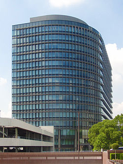
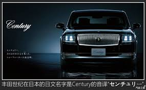

丰田汽车（日语：トヨタ自動車／トヨタじどうしゃ Toyota Jidōsha */?，英语：Toyota Motor Corporation），简称丰田（トヨタ，TOYOTA），是源自日本的跨国汽车公司，总部位于日本爱知县丰田市，现时为世界销量排名第一的汽车制造商，利润也名列前茅[2]；名列美国《财富》杂志2017年全球五百大企业排行榜的第5位。 截至2012年， 丰田共售973万辆车，2013年度共售1013.3万辆汽车，2014年共售1023万辆汽车， 是第一个达到年产量千万台以上的车厂。而丰田亦是凌志、大发及日野品牌的母公司。
历史
早期
丰田汽车公司最初是创办人丰田佐吉的“丰田自动织机制作所”于1933年9月成立的汽车部门。这个提议是由丰田佐吉的儿子，丰田喜一郎所提出的，但是首任社长则由入赘女婿丰田利三郎出任。透过活用在织机制作上的铸造、机械加工技术等的技巧，经过研究后终于在1935年开始制造汽车。1937年，汽车部门正式独立出来，成立了“丰田自动车工业株式会社”（トヨタ自動車工業株式会社）。 丰田汽车得到了日本政府的支持，以缓解当时资金和物资的短缺，二战时丰田虽然是日本军方车辆的主要供应商，主要从事军用卡车的生产，但在美军的地图上标示的是“丰田汽车工厂”，显然没有被列为重要工厂之一，所以初期没有受到什么攻击，在战争末期，1945年美军原订8月21日预定轰炸并烧毁丰田市，惟昭和天皇在8月15日向全日本广播，宣告无条件投降，因此丰田的厂房幸免于难。
二战后
随着在抗日战争后的1950年实施的财政收紧政策，公司陷入了经营危机。丰田喜一郎辞任社长一职，作为以帝国银行（即其后的三井银行，现今的三井住友银行）・东海银行（即其后的日本联合银行，现今的三菱日联银行）为首的银行团紧急融资的条件，继而成立了以强化销售为主的“丰田自动车销售株式会社”（トヨタ自動車販売株式会社），实行将制造及销售分开。之后，该公司便一直与负责生产及开发的“丰田自动车工业”紧密联系，同步工作。但最终于1982年再次合并成为“丰田自动车株式会社”（トヨタ自動車株式会社）。值得一提，在1950年的经营危机之中，丰田也有参与，大量生产为朝鲜战争中美军使用的卡车，而丰田亦在66上半年进军大中华市场。丰田是1949年后最早进入中国的资本主义国家汽车公司，现在在中国除销售进口汽车外还和在天津，成都以及广州的合资工厂生产汽车。
为了响应环保和石油危机，1997年丰田在国内率先推出普锐斯，成为世界第一款市售的混合动力汽车，并在2000年开始全球发售，开创了新能源汽车现时主流方向。
新世纪
直至2003年3月为止，公司的总雇员数为65,551人，加上所有联系的公司合计共有264,096名雇员。是全日本最大，世界第三大的企业。 公司的影响力，可见于总部所在的“举母市”，因为丰田汽车将总部设在该市，使该市能够迅速发展起来，遂改名为“丰田市”。 公司的新总部大楼于2005年建成。楼高14层，地底两层，同年10月，从本来由通用汽车持用的 大约20%的富士重工业股权中，取得8.7%的股权，成为了该公司的最大股东。丰田随之宣布会与富士重工业合作，作业务上的提携。 据2006年5月3日《纽约邮报》报导，在北美丰田总部当秘书的K小姐，数度被北美丰田社长大高英明带到位于纽约曼哈顿区的中央公园，受到身体接触等性骚扰行为。结果原社长、北美丰田及位于丰田市的丰田汽车总部被要求赔偿1亿9千万美元（相当于210亿日圆）。原社长大高以“继续留任社长将会损害公司利益”为由提出请辞。但外界均视这次请辞只为调职。（美国法人性骚扰事件） 另外，位于名古屋站前的丰田大厦及每日大厦将于2007年重建为“Midland Square”，新的名古屋办事处及现时位于东京的营业部将会一并迁进新址（与东和不动产、每日新闻社做法一样）。 2008年第一季，生产了241万辆车，取代生产225万辆车的美国通用汽车，成为全球第一。然而受到金融海啸影响，2009年一月丰田公布二次大战以来首次亏损，至2009年3月底为止的2008会计年度，丰田累计亏损达4,369亿日圆（约台币1,506亿元），原社长渡边捷昭下台由丰田家族第三代丰田章男接棒。 2009年8月美国加州发生一起交通意外， 驾驶人开着丰田的凌志车款，飙到时速190公里时，整辆车失控冲出车道翻覆，车里四名乘客当场丧生。后来经过调查，可能是脚踏垫卡住油门踏板，25日终于宣布，明年一月开始召修八种在美国售出的车款，包括camry prius Avalon和lexus等.预估总共420万辆.召回后要把油门踏板缩短，并且更换更安全的脚踏垫.同时为其中五种车款安装新的刹车功能，让同时踩下油门跟刹车踏板时，以刹车功能优先。 2010年1月爆发汽车瑕疵事件，由加拿大零件场CTS生产之油门踏板，经美国运输部发现有瑕疵，此踏板会产生油门不会回弹导致爆冲，全球总召回车辆790万辆持续增加，2月爆发第三代Prius刹车失灵事件，全球在召回27万辆，这是史上丰田最惨之一年。 2010年1月，Toyota宣布在欧洲一千八百万部汽车，包括二十二万部在英国，关于加速板的问题。许多Toyota的汽车车型都有问题，这个包括之前和2010年度的汽车。Toyota接着召回他们的Pirus车型和重新设计他们的ABS系统。 在3月26日，因为在这次召回后冷淡的销售， Toyota停止了在英国和法国的出口直达十二日。在2010年的四月，美国政府要求Toyota赔偿约一千六百万元美金给国际高速交通部门关于这次加速板的事故的耽误。在4月10日Toyota表示会付出这个赔偿。公司表示此事故可能会令公司损失20亿的出口和销售。 2010年世界百大企业排名丰田汽车由2009年的第八名下滑至第十一名，仍为汽车界的龙头，Mercedes Benz紧追在后。 丰田2013年1月28日公布，连计子公司大发汽车（Daihatsu）和日野货车（Hino），2012年全球汽车销售按年升23%至975万辆，多过通用汽车去年全球销售929万辆，重登失落四年的世界汽车销量首位。公司指2012年汽车出口升23.4%至205万辆，是两年来首次增加。 2016年1月31日，丰田汽车以每0.26股交换大发一股，斥资32亿美元收购子公司大发工业株式会社末持有的48.8%剩余股份，大发将成为丰田集团旗下全资子公司，7月27日在东京证交所退市。 2017年，丰田汽车赞助2017年阿斯塔纳世界博览会日本馆的建设及营运。
经营历程
经过1950年的危机后，丰田正式确立了像“改善”、“Just-in-time生产系统”（看板系统）以及丰田生产方式等等的生产、经营技术，并开始重视销售、不单靠银行融资，努力于充实本身的资本，现已成为无借赁经营的企业。由于丰田的内部储备相当充足，故有“丰田银行”之称。根据2002年度的结算，丰田是首家日本企业的连结经常利润超过了一兆日圆。而在2004年度的结算中，也是首间日本企业的连结纯利（以美国会计基准）超过了一兆日圆。 丰田从1950年代就开始着手投入品质管理。例如车门及车尾厢等开合部分的接口等状况、隔音性能等等，对这些用家较易察觉部分的品质进行评价。丰田一方面继续琢磨已很可靠的既有技术，另一方面又擅长以低成本来制造相对高质素制品的技术，故其下汽车经常被评价为低故障率。另一方面对比其他车厂，由于丰田较为慎重于机械结构上的新技术导入，故经常被外面批评为“跟风”、“行为谨慎”及“只取人家之长”。观乎1960年第2代的Corona（日冕），大众对其单体构造车身的脆弱、以及柴油方式的不受欢迎之类的批评，可见丰田是受到顾客们如何严格回应自己研发的新技术的经验所影响。 花费六年时间研发，终于在1962年发售的700cc小型大众汽车．第一代的Publica，是一台为了以基本概念，去彻底实现价格低廉化及经济性所设计的实用车种。可是不断被消费者“反正都要买，贵一点也无所谓”这样的心理所打压，结果使销售量不振。车厂透过分析销售量不振的原因，以及加装上收音机及暖风机等等豪华设备后，销售数字才得以上升。透过此次事件，使到“丰田的80分主义”思想因而产生。 1966年发售的第一代Corolla（花冠）开发调查主任的长谷川龙雄提出80分主义。指出一方面要提高产品的完成度，另一方面不单只追求优越于其他厂商的机能与性能，更要以万人所接受的80分为合格目标，超越80分后再逐级攀上获取更高分数，最终达致各方面均取得平衡的企业思想。之后，80分主义更加演变成为了“80分主义+Alpha”，成为了针对旧车款及其他公司的差别化策略。可是“80分”这一个字被批评为独行独断，屡次受反对者批评为“不完美，偷工减料地造车”。由于对于“80分主义”的批评陆续浮现，所以丰田于1968年发售的小型货车Hilux广告上打着“101分主义”的旗号。 在1970年代后期，世界各地的小型汽车正循着前轮驱动方向进行之际，丰田在推出前轮驱动的主力车款Corolla和Corona之前，先行推出过新车款如“Tercel．Corsa”，以及改良型的中级小型汽车“Camry（冠）．Vista（眺望）”等主力以外的车款。透过推出以上车款而获得顾客的回应之后，仍然继续一并推出两种不同驱动方式的车款，可见其策略慎重。另外，由山叶（Yamaha）发动机提供高性能型双凸轮轴引擎组件，又由本田引进引擎的稀薄燃烧系统及废气净化系统等，丰田虽然得到同业其他公司的援助，得以获取如高度的技术及排气对策等等的紧急需要，但是丰田倾向能把获得的技术改良，投放于其产品身上并发挥其实力。如开发为了使燃烧效率提高的狭角配置多阀双凸轮轴引擎（High Mechanism Twincam），并把这项产品搭载于大量投产的车款之中可见一斑。 在90年代以后的不况期，其经营举动也备受注目。最终丰田把其生产方式向其他企业出售。可是另一方面，其压价至一毛钱也不放过的方式，被评犹如“把干毛巾扭尽”般，对一些与其有合约关系的公司以及大型的客户（如制铁商）强烈压迫，受到严重批评。另外，丰田在各地所面对的负面新闻令其备受注目。如在兴建丰田商工会议所所需的9亿日圆里，由丰田市资助当中约7亿日圆的建设费用；在兴建名古屋站前的新总部大楼“Midland Square”上又收受市街地再开发补助金；其负责所有债务负担的蒲郡海洋开发（Laguna）项目上又强求爱知县及蒲郡市增加投资；在项目中心部开设的海阳学园又偷步：在取得认可前先行评核奖学金得奖者等等欠缺社会性的负面新闻引起了社会的关注。 1990年代后期，久未受过注目的丰田亦曾抢先把位于引擎部分的智慧可变汽门正时控制系统（Intelligent Valuable Valve Timing Control，VVT-i）普及化。（引擎可变汽门正时为意大利飞雅特汽车的专利技术，引擎可变汽门扬程为美国通用汽车之专利技术，引擎连续可变汽门正时为美国加州Clemson大学的专利技术）因为该系统能够根据行车状况，由电子系统控制汽门重叠角。所以丰田旗下大部分的车款，均能获取日本国士交通省（前运输省）所订定的低排放量汽车标准。这套系统与日产汽车的NVCS，以及三菱汽车的MIVEC其实是同一个系统。 在经过1990年代的业界重组期之后，现在一般都会与集团内的各间公司共同开发。但小型汽车用的新型引擎以及车款的设计就会交予大发工业，而货车的开发则会交予日野汽车。至于燃料电池车及以汽油和电池驱动的环保车款的开发，就会与因为提供零件而关系深厚的松下集团一同提携。除此之外，丰田亦有出战世界最顶级的一级方程式赛车等的汽车运动；又投身于先进技术的开发及实用化，诸如燃料电池混合系统，以及G-Book．G-Book Alpha等的车用通讯系统等，把这些技术提供予集团以外的其他公司，以耽误对网络的根本思想不理解的对手，本田技研工业推出同类产品于市场的时间，并试图挽回其营业成绩。 在北海道士别市拥用一个巨型试车场，又专门开发为降雪地区而设的车款，以及一些针对海外市场的商品，可见其多元化的一面。 但最近诸如花冠及普锐斯等受欢迎的车款相继出现问题须要回收。主要原因，是因为日本国内汽车市场竞争白热化，为了胜出这场销售战，丰田与零件商联手有计划地削减成本并同时提升生产效率。其中一项有力手段，就是不再开发及使用为特定车款而设的专用零件，转而令零件共通化，适合各个车款。但结果却出现共通化的零件与汽车排斥的情况，因而回收数量大幅增加，成为问题弊端。